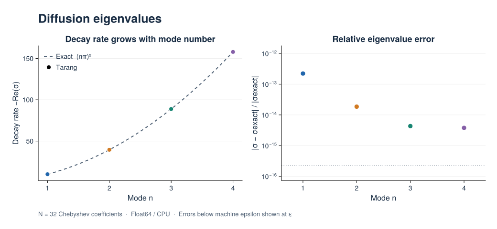
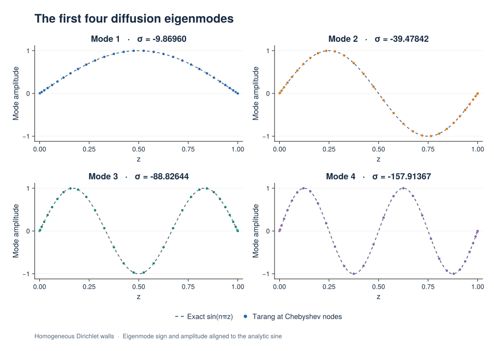

Eigenvalue Problems
Use EigenvalueProblem and EigenvalueSolver to compute growth rates and modes of a linear system. Nonlinear equations must first be linearized about a chosen base state; constructing an EVP does not perform that stability linearization.
Eigenvalue convention
For a mode $X(t)=x e^{\sigma t}$, the equation $M\partial_t X+LX=0$ becomes $\sigma Mx+Lx=0$. Keep dt(u) in the equation to assemble the mass matrix; the solver substitutes the eigenvalue for the time derivative. A positive real part of $\sigma$ means growth.
Boundary conditions for perturbations are homogeneous. Inhomogeneous physical boundary data belongs to the base-state problem. Tau unknowns enforce bounded constraints, whose mass-matrix rows are zero. Nonfinite generalized eigenvalues associated with algebraic constraints are excluded from returned finite modes.
Example: diffusion modes
For $\partial_t u=\partial_z^2u$ on $[0,1]$ with homogeneous Dirichlet walls, the growth rates are $\sigma_n=-(n\pi)^2$. This serial CPU example checks the four slowest-decaying modes.
using Tarang
coords = CartesianCoordinates("z")
dist = Distributor(coords; dtype=Float64, device=CPU())
zb = ChebyshevT(coords["z"]; size=32, bounds=(0.0, 1.0))
domain = Domain(dist, (zb,))
u = ScalarField(domain, "u")
tau1 = ScalarField(dist, "tau1", (), Float64)
tau2 = ScalarField(dist, "tau2", (), Float64)
lift_basis = derivative_basis(zb, 2)
problem = EigenvalueProblem([u, tau1, tau2]; eigenvalue=:σ)
add_parameters!(problem; l1=lift(tau1, lift_basis, -1),
l2=lift(tau2, lift_basis, -2))
add_equation!(problem, "dt(u) - Δ(u) + l1 + l2 = 0")
add_bc!(problem, "u(z=0) = 0")
add_bc!(problem, "u(z=1) = 0")
solver = EigenvalueSolver(problem; nev=4, which=:SM)
eigenvalues, eigenvectors = solve!(solver)
@assert length(eigenvalues) == 4
@assert maximum(abs, imag.(eigenvalues)) < 1e-8
@assert isapprox(sort(real.(eigenvalues); rev=true), -(π .* (1:4)).^2; rtol=1e-6)Computed spectrum and eigenmodes
The figures below run the example above with 32 Chebyshev coefficients on the CPU in Float64. Diffusion with homogeneous Dirichlet boundaries is a standard EVP benchmark: both the decay rates and eigenfunctions are known analytically. In this run, the largest relative eigenvalue error was $2.22\times10^{-13}$ and the largest grid-point eigenfunction error was $3.18\times10^{-14}$. Roundoff-level results can vary with Julia and the linear algebra backend.

The decay rates are $-\operatorname{Re}\sigma_n=(n\pi)^2$. The error panel compares the computed eigenvalues with these exact values; errors smaller than machine epsilon are displayed at epsilon.
Spectrum PNG · Spectrum SVG · Eigenvalues and error measurements (CSV)
{kind=link}
{kind=link}

Dots show eigenvectors reconstructed on the Chebyshev grid; dashed curves show $\sin(n\pi z)$. Each eigenvector has an arbitrary sign and amplitude, aligned here by a least-squares fit to the analytic function. No spatial rescaling is applied.
Eigenmodes PNG · Eigenmodes SVG · Computed profiles (CSV)
{kind=link}
{kind=link}
Reproduce the figures
From the repository root, install the optional CairoMakie environment and run the generator:
julia --project=docs/figures -e 'using Pkg; Pkg.develop(path="."); Pkg.instantiate()'
julia --project=docs/figures docs/figures/eigenvalue.jlThe script executes this page's Julia example, checks the eigenvalues, reconstructed eigenfunctions, wall values, and generalized matrix residuals, then writes SVG, PNG, and CSV files to docs/src/assets/figures/eigenvalue/. The normal documentation build uses these saved assets and does not require CairoMakie.
Selecting and interpreting modes
nev selects the number of modes. which=:SM selects smallest magnitude; :LR selects largest real part, useful for growth-rate searches. A target selects nearby eigenvalues. Check spectra under resolution refinement to separate converged physical modes from discretization artifacts.
Eigenvectors are returned as stacked coefficient columns for a single active subproblem. With multiple Fourier-mode subproblems, the solver pools eigenvalues and returns an empty eigenvector matrix. See extracting eigenmodes for the storage convention. GPU eigenvalue solves are currently unsupported.
Further reading
- Stability analysis tutorial: base profiles and hydrodynamic examples.
- Linear BVPs and nonlinear BVPs: steady base-state calculations.
- Tau method: algebraic constraint rows and lift representation.
- Eigenvalue solver reference: selection options and return values.